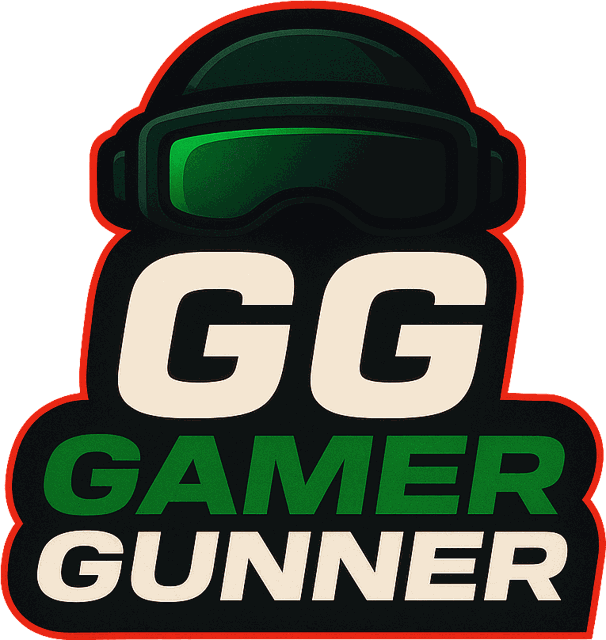

Loading the world… 0%
On-screen controls: left stick moves (and drives), drag anywhere to look around, buttons on the right jump, shoot and use. ☰ at the top has avatar, cars, friends, save and more. Best played sideways.
← Back to game.gamergunner.comWhat went wrong? Where were you and what were you doing? (Please don't type your name or anything private.)